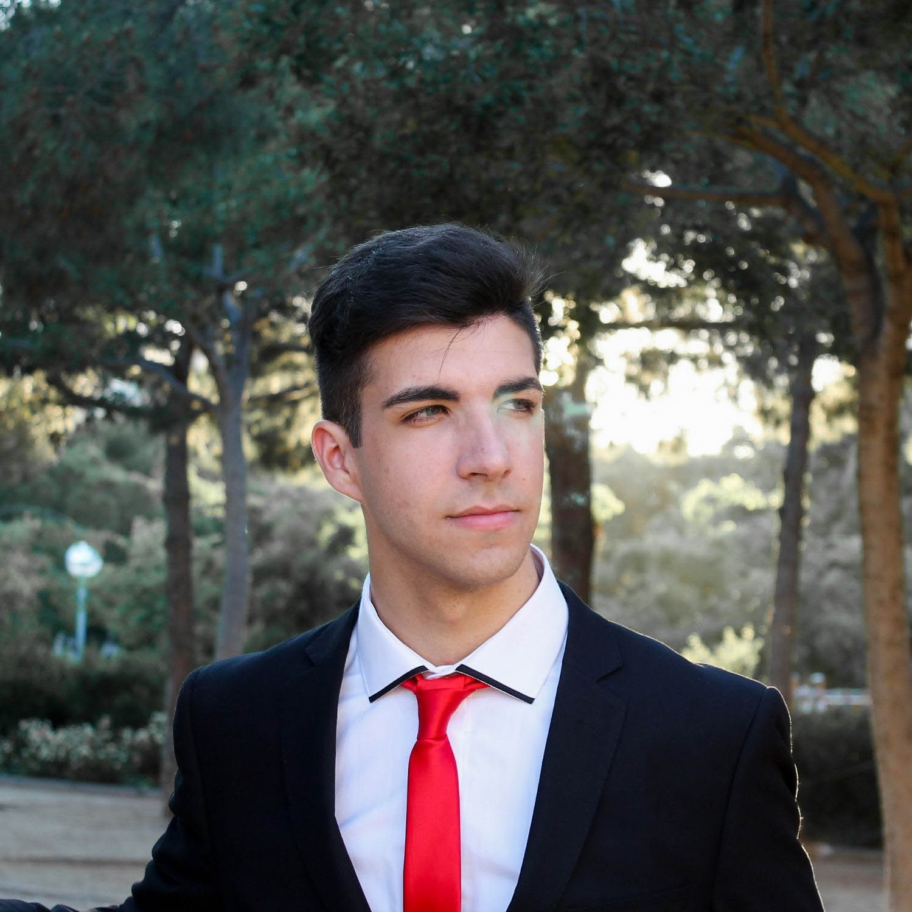

Currículum David Blázquez
Foto Personal:

Datos personales
- Nombre y apellidos: David Blázquez.
- Edad: 22 años (14-11-1998).
- Nacionalidad Española.
- Idiomas: Castellano, Catalán y Inglés.
Mi perfil de Linkedin
Experiencia Profesional
- Programador web Mouters (Prácticas)
Trabajando con HTML, CSS, JavaScript, PHP, Wordpress y MySQL.
Mantenimiento de la página web y creación de nuevo contenido.
- Maquetador | Programador web BCNScience (Trabajo)
Trabajando con HTML, CSS, SCSS, jQuery, JavaScript, Git.
Creación de presentaciones interactivas para iPad y creación de webs.
- Programador Python UPC (Prácticas)
Trabajando con Python, HTML, Git.
Mantenimiento de diversas páginas web, maquetación y corrección de errores.
Habilidades
- Organización.
- Empático.
- Crítico.
- Responsable.
- Cooperativo.
Estudios profesionales
- Bachillerato Científico (Jesuïtes el Clot)
- Desarrollo de aplicaciones web (Jesuïtes el Clot)
- Desarrollo de aplicaciones multiplataforma (Jesuïtes el Clot)
Youtube
He empezado activamente en Youtube este 2020, considero que en 11 meses
he creado una comunidad increible.
Con mas de 12.000 personas en menos de un año, he aprendido mucho
tanto a comentar como a crear y editar contenido.
Clica para entrar a mi Canal de Youtube!